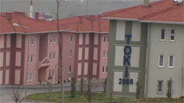

|
SALON ISTANBUL
ARTIZINCONNU
Sehir ve Bellek – Sulukule'yi Gordun Mu (The City and The Memory – Have You Seen Sulukule) | TR 2009 | 8’40’’
www.artizinconnu.com
With the beginning of 2000, city center has been an important economical value in Istanbul. This has been the most important pretext for urban transformation politics. The first neighborhood affected by these politics is Sulukule, a Gypsy neighborhood since almost more than 1000 years. Fueled by the expropriation law accepted by the end of 2006, Sulukule residents are shown to TOKI residences in Tas¸oluk that is 45km. away from Sulukule. As a first of a series called The City and The Memory, an attempt to map neighborhoods that are being subject to urban renovation in Istanbul, Sulukule'yi Gördün mü? (Have You Seen Sulukule?) is composed of three parts. First two parts cover Sulukule during the post expropriation, seven months apart, while the last part explores the Sulukule dweller's new settlement in Tas¸oluk. In the search of composing a memory, the video tries to reflect social and physical aspects of urban transformation starting out with the texture shaped by time.
Artizinconnu is a citizen of Istanbul. She studied cinema in Universite de Paris 8. She worked alternatively as an assistant director, for commercial, corporate films and TV productions, as a reporter and an editor for film magazine Sinerama, and as a translator for Le Monde Diplomatique Turkish Edition. After making an experimental video in 2006 for Europen 8, an architectural project about urban transformation of an old shanty town Zeytinburnu in Istanbul, she started to be interested with the idea of urban space and it's contradictions in the construction of personal and social memory. Since 2008 she has read, studied, thought and tried to produce on the subject. "Sulukule'yi Gördün mü?" is her first video documentary production.
zurück
|